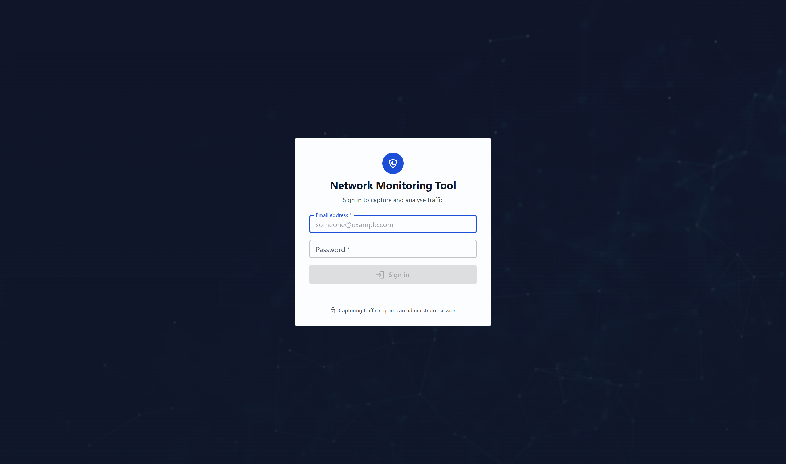

Signing in
What you need before you start, and how the first account comes to exist.
Requirements
- A current version of Microsoft Edge, Google Chrome or Firefox. JavaScript and cookies must be enabled.
- A screen at least 1280 pixels wide. The tables carry a lot of columns; narrower than that and they scroll sideways.
- The address of your installation, from whoever set it up.
Signing in
- Open the application address in your browser. If you are not signed in, the sign-in page is what you get, whatever address you asked for.
- Type your Email address and Password.
- Click Sign in.
You arrive at the Dashboard. Your session lasts until it expires or you sign out from the avatar at the top right.

The first account
No account ships with this product, and that is deliberate: a published default password is a published credential. A migration deletes any account still carrying the password hash this project once shipped, so upgrading an old installation removes it too.
Exactly one account can therefore be created without anybody's permission — the first one, on an installation whose account list is empty. It is created as an administrator, because otherwise there would be no way to create the second. The moment one account exists, that window shuts.
After that, accounts are created by an administrator. See Accounts.
If you see Invalid email or password for an address you are sure of, ask your administrator whether the account exists on this installation. The message is deliberately the same whether the address is unknown or the password is wrong, so that it cannot be used to find out which accounts exist.